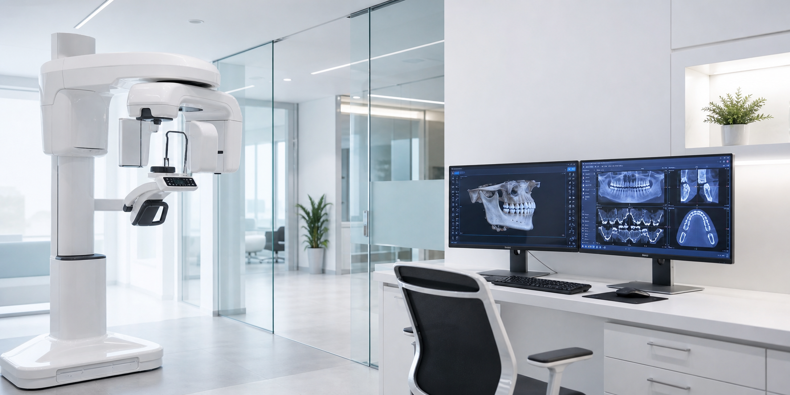

Конусно-лучевая томография
3D-диагностика костных структур, суставов и зон для имплантации с точным планированием.
Главная / Технологии
Отдельная технологическая страница объясняет пациенту, как именно формируется план лечения: какие данные используются, почему это снижает неопределенность и как клиника контролирует качество.

Ключевое оборудование
3D-диагностика костных структур, суставов и зон для имплантации с точным планированием.
Цифровой слепок без лишнего дискомфорта и основа для ортопедических и ортодонтических работ.
Фиксация исходного состояния и контроль динамики формы, линии улыбки и мягких тканей.
Точность эндодонтических вмешательств и сохранение зубов в сложных клинических ситуациях.
Поддержка имплантации и сложных хирургических этапов с понятной траекторией вмешательства.
Модель будущих реставраций до начала активной клинической фазы и точная передача технику.
Цифровой протокол
КТ, сканер, фото и осмотр формируют полную исходную картину еще до обсуждения плана.
Команда собирает единый протокол лечения и согласует последовательность этапов.
Пациент видит логику будущих реставраций, ортодонтии или имплантации до старта.
После активной фазы данные используются для стабилизации результата и наблюдения.
Безопасность и контроль
Поэтому корпоративная страница технологий показывает не “витрину аппаратов”, а связку оборудования, протоколов и внутреннего контроля качества.
Стандарт обработки инструментов и отделение чистых и рабочих потоков.
Повторяемость диагностики и возможность вернуться к исходной картине в любой момент.
План лечения не уходит в работу без проверки клинической логики ключевыми специалистами.
После больших кейсов технология продолжает работать на контроль стабильности результата.